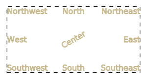

gdstk.Label¶
-
class
gdstk.Label(text, origin, anchor='o', rotation=0, magnification=1, x_reflection=False, layer=0, texttype=0)¶ Text objects with out geometrical information.
Labels do not create any new geometry in the layout. They can be used to add descriptions, flags, or comments to the design. For polygonal text,
gdstk.text()should be used instead.- Parameters
text (str) – Text string.
origin (coordinate pair or complex) – Label position.
anchor (str) – Origin position with respect to the label text. One of “n”, “s”, “e”, “w”, “o”, “ne”, “nw”, “se”, or “sw”.
rotation – Rotation angle (in radians).
magnification – Scaling factor.
x_reflection – If
True, the label is reflected across the horizontal axis before rotation.layer – GDSII layer number assigned to this label.
texttype – GDSII text type number assigned to this label.
Examples
>>> frame = gdstk.rectangle((-2, -1), (2, 1), datatype=1) >>> label_o = gdstk.Label("Center", (0, 0), rotation=numpy.pi / 6) >>> label_n = gdstk.Label("North", (0, 1), "n") >>> label_s = gdstk.Label("South", (0, -1), "s") >>> label_e = gdstk.Label("East", (2, 0), "e") >>> label_w = gdstk.Label("West", (-2, 0), "w") >>> label_ne = gdstk.Label("Northeast", (2, 1), "ne") >>> label_se = gdstk.Label("Southeast", (2, -1), "se") >>> label_nw = gdstk.Label("Northwest", (-2, 1), "nw") >>> label_sw = gdstk.Label("Southwest", (-2, -1), "sw")
Note that this example can only be correctly displayed in browsers with good support for text alignment in SVG images.
Methods
copy()Create a copy this label.
delete_property(attr)Delete property of this label.
get_property(attr)Return a property of this label.
set_property(attr, value)Set a GDSII property for this label.
Attributes
Label anchor.
Label layer.
Label scaling factor.
Label origin.
Label rotation angle.
Label text.
Label text type.
Label reflection across the x axis.
-
anchor¶ Label anchor.
-
copy() → gdstk.Label¶ Create a copy this label.
- Returns
Copy of this label.
-
delete_property(attr) → self¶ Delete property of this label.
- Parameters
attr (number) – Property number.
-
get_property(attr) → str¶ Return a property of this label.
- Parameters
attr (number) – Property number.
- Returns
Property value. If the property number does not exist,
Noneis returned.- Return type
str or None
-
layer¶ Label layer.
-
magnification¶ Label scaling factor.
-
origin¶ Label origin.
-
rotation¶ Label rotation angle.
-
set_property(attr, value) → self¶ Set a GDSII property for this label.
- Parameters
attr (number) – Property number.
value (str) – Property value.
-
text¶ Label text.
-
texttype¶ Label text type.
-
x_reflection¶ Label reflection across the x axis.